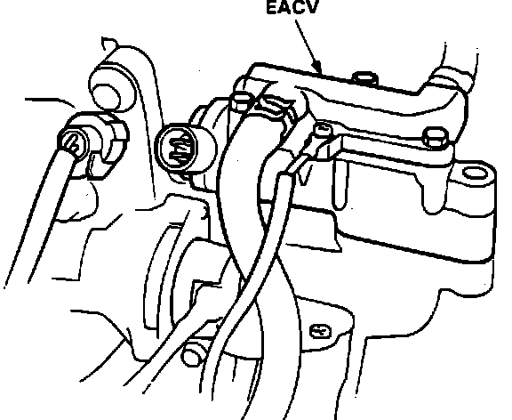
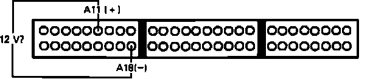
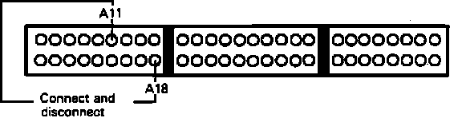

DTC 14
Code 14 indicates a malfunction in the electronic air control valve (EACV) circuit.1. Remove Alternator Sense fuse in underhood relay box for 10 seconds to reset ECU.
2. Start engine and observe diagnostic LED.
Flashes code 14, proceed to step 4.
Does not flash, proceed to next step.
3. Malfunction is intermittent. Check connections at EACV and ECU. End of test.
Electronic Air Control Valve Code 14 Diagnosis:

4. Stop engine and disconnect EACV electrical connection.
5. Measure resistance across EACV terminals.
8 - 15 ohms, proceed to next step.
Not 8 - 15 ohms, replace EACV. End of test.
6. Check for continuity to ground at each EACV terminal individually.
Continuity, replace EACV. End of test.
No continuity, proceed to next step.
7. With ignition on, check for voltage across EACV harness connector.
Battery voltage, proceed to next step.
No battery voltage, proceed to step 11.
8. Disconnect ECU connector A and recheck voltage across EACV harness connector.
Battery voltage, proceed to next step.
No battery voltage, proceed to step 10.
9. Repair short in BLU/RED wire between EACV and ECU terminal A11. End Of test
10. Replace electronic control unit. End of test.
11. Check voltage between EACV harness YEL/BLK wire and ground.
Battery voltage, proceed to step 13.
No battery voltage, proceed to next step.
12. Repair open YEL/BLK wire between EACV and main relay. End of test.
13. Turn ignition off and reconnect EACV.
14. Install test harness to main harness only. If test harness is not available, carefully backprobe wires at ECU connector.
Electronic Air Control Valve Code 14 Diagnosis:

15. Turn ignition on and check voltage between terminals A11 and A18.
Battery voltage, proceed to step 17.
Not battery voltage, proceed to next step.
16. Repair open BLU/RED wire between EACV and ECU terminal A11.
Electronic Air Control Valve Testing:

17. Momentarily jumper harness terminals A11 and A18 together.
EACV clicks, replace electronic control unit. End of test.
EACV does not click, replace EACV.